From the Widgets menu, select Autotrader.
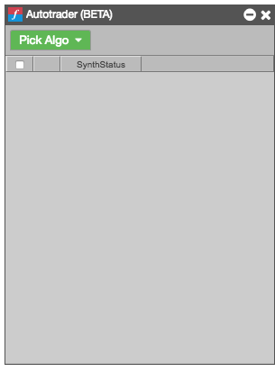
Click Pick Algo, and select the desired algo from the list of deployed algos.

Note: The list includes only ADL algos and Order Ticket Algos (OTAs) you have permission to run.
A new Autotrader widget for the selected algo is opened, seeded with the algo name. The columns vary based on the inputs and variables defined as part of the algo. The green columns indicate user-defined (algo input) variables in the algo itself. Any exported (algo output) variables will appear as orange columns in Autotrader.
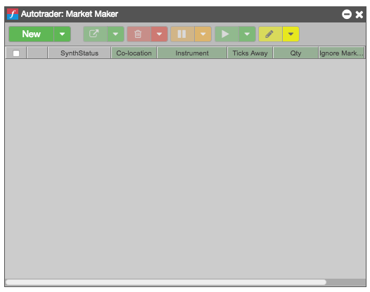
Click New to add one instance of the algo; or you can click the New dropdown to add multiple copies of an algo (as shown).
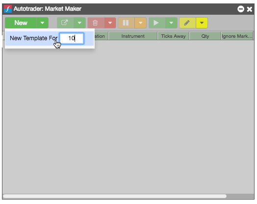
The specified number of algo instances are added to the widget.
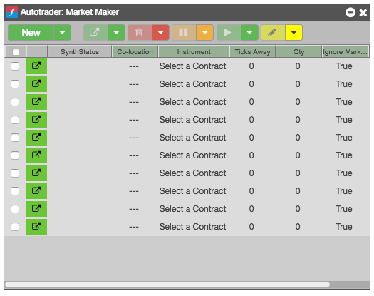
Each row represents an algo instance. Note that creating a row does not start the algo—each row must be launched for the corresponding algo instance to become active.
Enter the algo input variables for the instances you want to launch.
You can manually click each cell and specify a value, or you can use data you have stored in an Excel spreadsheet. The remainder of the steps assume you have the data stored in an open Excel spreadsheet.
Modify or create your Excel spreadsheet.
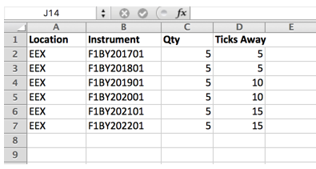
In the Excel spreadsheet, select the values you want to seed in the algo instances in Autotrader and copy them.
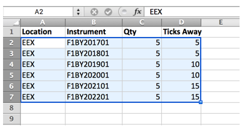
When you copy and paste the values from Excel, the values are static and not linked dynamically. You can also link the values from Excel so that they update in Autotrader if you change them in Excel.
In the Autotrader widget, select the cells corresponding to those you copied from Excel.
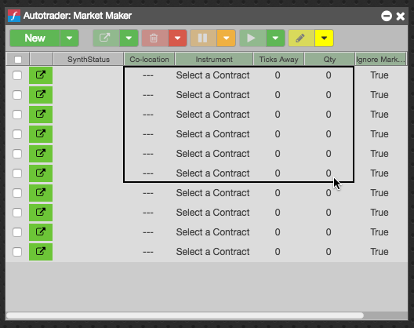
Paste the values by typing Ctrl-V.
The corresponding cells update with the copied values.
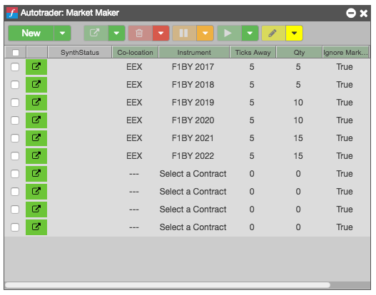
The new variable values appear in each row of the algo in Autotrader. Note that the algos are not yet launched.
Select the algo instances you want to launch, and click 
You can launch an instance by clicking the launch button associated with the instance, or you can select the the checkbox for one or more instances and click the launch button in the toolbar.
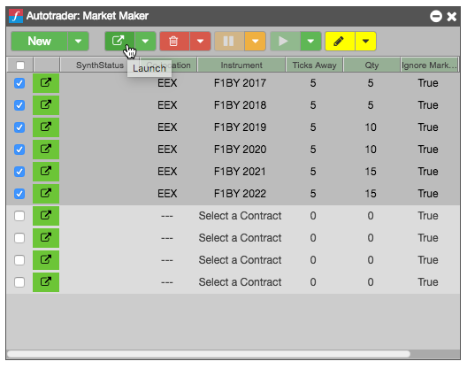
The selected algos' SynthStatus changes to Starting as the algo instances are launched.
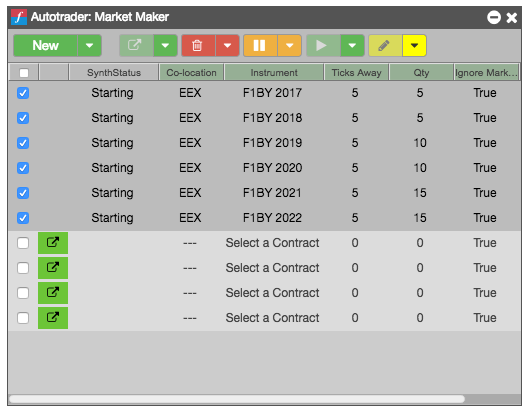
After the algos launch successfully, the SynthStatus field changes to Working.
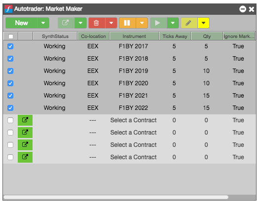